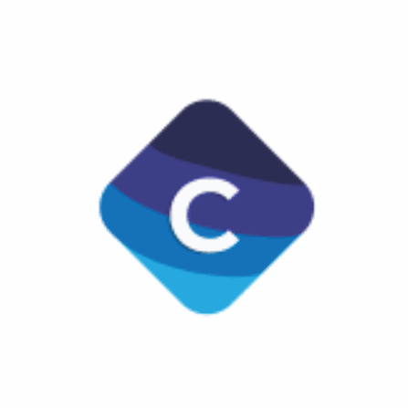

Product marketing
Connect the platform’s value and use to the organisations and decision-makers it was built to serve.

SaaS and fintech · Co-founder operating roleAt Coopify, Wole worked as a co-founder and Head of Marketing across product, discovery, professional partnerships and enterprise demand.
The founder situation
For a founder-led platform, marketing cannot sit apart from the product, partnerships and enterprise conversation. The operating work connected how the offer was understood, how suitable organisations discovered it and how qualified demand entered the business.
Contribution areas
Connect the platform’s value and use to the organisations and decision-makers it was built to serve.
Develop search authority and make useful product explanations easier to find.
Use relevant relationships to support trust, reach and enterprise conversations.
Connect marketing activity to a defined monthly marketing-qualified-lead record.
The operating record
These are Wole’s selected operating records as co-founder and Head of Marketing. They are not Kryssen client results and are not presented as outcomes attributable solely to marketing.
What this means for a founder
Kryssen helps founders connect the buyer question, product story, useful content and distribution around one commercial priority—then define the signals that should be reviewed and corrected.
Talk to us